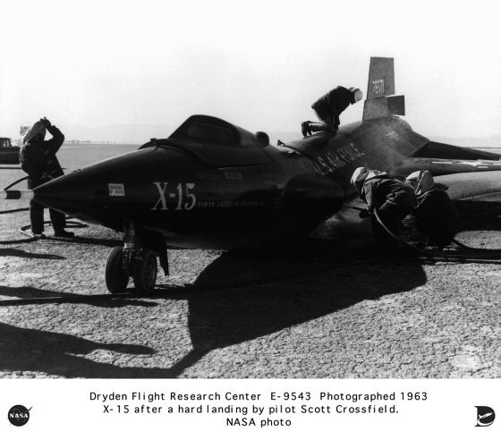
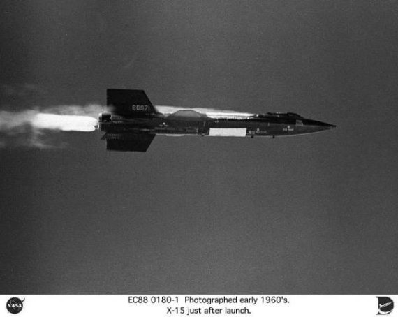
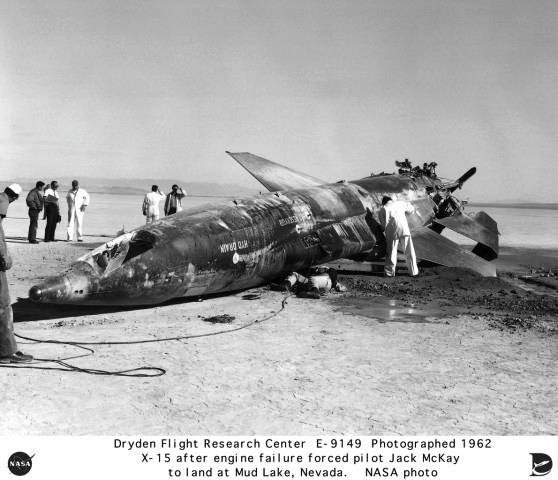

Ракетный самолет Х-15
Параллельно с проектом «Меркурий» в США велись и другие, не менее интересные работы. О ракетном самолете Х-15 в советских газетах в 1960-е годы писали немного. Хотя, надо отметить, он не являлся для нас чем-то абсолютно неизвестным, как например, аналогичные отечественные разработки – ракетоплан Челомея или авиационно-космическая система «Спираль».
Причин, почему писали мало, несколько.
Во-первых, Советскому Союзу нечего было противопоставить американцам в этом классе разработок. Из того, конечно, что можно было бы продемонстрировать всему миру.
Во-вторых, в те годы больше внимания уделяли чисто космическим проектам, чем проектам авиационно-космическим.
В-третьих, сами американцы, достигнув поразительных результатов при полетах самолетов Х-15, остановились, по сути дела, на полпути, не до конца воспользовавшись полученными результатами и не развив достигнутый успех.
Но, так или иначе, сейчас, когда мы стараемся заполнить белые пятна мировой космонавтики, есть смысл ознакомить читателя и результатами этого проекта. Тем более, что они того заслуживают.
Программа создания ракетного самолета Х-15 стала логическим продолжением других программ серии «X»: Х-1, Х-2, Х-3 и так далее. Идея о строительстве летательного аппарата, способного превысить скорость звука в пять и более раз, появилась в 1951 году в недрах правительственного Национального консультативного совета по аэронавтике. Однако руководство этого учреждения, в принципе понимая важность этой проблемы, не проявляло особого рвения в реализации его. Это было и дорого, и технически сложно, и неизвестно, чем все это могло кончиться.
Однако отдельные сотрудники совета по собственной инициативе проводили исследования возможности создания летательных аппаратов подобного типа.
Новый импульс программа получила в 1953 году, когда этой же проблемой озадачились в ВВС и ВМС США. Там начались серьезные проработки вопроса о возможности создания самолета, который бы в наибольшей степени отвечал быстро растущим потребностям Вооруженных Сил. Естественно, и авиация, и флот рассматривали самолет, который предстояло создать в рамках программы Х-15, в первую очередь, как боевую машину. Научные исследования стояли на втором плане, но, надо отдать должное американским военным, они прекрасно понимали, что не решив чисто научные проблемы, они дальше не продвинутся.
Однако уже к следующему году армейские круги осознали, что в одиночку им этот проект не поднять, ни с научной, ни с финансовой точек зрения. Результатом этого осмысления стал меморандум о сотрудничестве между ВВС, ВМС и Советом по аэронавтике, подписанный 23 декабря 1954 года. Результатом подписания этого документа стало создание трехстороннего рабочего органа, получивший название Комитет Х-15. Ему предстояло координировать все работы по этой программе. На Совет по аэронавтике возлагались функции контроля за реализацией проекта в целом. Военно-воздушные силы брали на себя изготовление самолета и его приемные испытания на заводе-изготовителе. Затем самолет передавался ученым, которые проводили программу исследований с привлечением как своих пилотов, так и пилотов из Воздушных и Военно-морских сил. Как впоследствии указывали участники проекта, Комитет Х-15 имел в большей степени психологическое и политическое, нежели какое-то практическое значение. Правда, это очень помогало в получении бюджетных денег. Когда следовала ссылка на трехсторонний комитет, как правило, деньги тут же выделялись Конгрессом.
Именно с момента подписания меморандума можно говорить о рождении ракетного самолета Х-15. Пусть пока только на бумаге, но это означало уже многое. Среди американских компаний был объявлен конкурс, по итогам которого корпорация «Норт Америкэн» получила подряд на строительство трех экземпляров самолета. Проект, представленный этой компанией, предусматривал строительство самолета длиной 15 метров с крыльями стреловидной формы с размахом 6,5 метра. Крылья предполагались относительно тонкими и небольшими по площади. Вес самолета составлял около 7 тонн, а после заправки топливом увеличивался до 16,5 тонны.

Х-15 готовится к полету
На самолет предполагалось установить жидкостный ракетный двигатель с тягой 27 тонн. Так как продолжительность работы ракетного двигателя составляла всего 80-120 секунд, предполагалось, что на высоту 15 километров аппарат будет доставляться с помощью специально переоборудованного для этих целей бомбардировщика В-52, а затем будет происходить разделение самолета-носителя и ракетного самолета. Дальнейший полет должен был происходить с использованием ракетного двигателя. Посадка производилась на скольжении.
Основными задачами, которые ставились перед программой Х-15, были следующие:
• создание мощного многократно используемого пилотируемого самолета для высотных скоростных полетов;
• исследование аэродинамических процессов при таких полетах;
• создание и проверка работоспособности систем управления для таких самолетов;
• исследования воздействия условий полета на организм человека;
• создание специальных костюмов для пилотов самолетов.
На Х-15 предполагалось достигнуть скорости около шести скоростей звука (6 Махов) и высоты не менее 76 километров.
Первый Х-15 был построен в середине октября 1958 года и с завода-изготовителя доставлен на авиабазу Эдвардс, штат Калифорния. Перевозка самолета сопровождалась большой помпой и вниманием средств массовой информации. В отличие от той секретности, в которой создавался и испытывался в 1947 году самолет Х-1, программа Х-15 была настоящим дорогостоящим театральным представлением. Программа привлекла большое общественное внимание, особенно после того как Советский Союз выиграл гонку за первый спутник, а гонка за первый полет человека в космос еще только начиналась.
Второй экземпляр самолета Х-15 был готов к апрелю 1959 года, а третий – к июню 1961 года.
Первый испытательный полет состоялся 8 июня 1959 года. Самолет, который пилотировал Скотт Кроссфилд, был отсоединен от самолета-носителя В-52 и начал свободный полет. Двигатель во время этого полета не включался, однако даже при этом самолет плохо слушался пилота и совершил несколько совершенно неожиданных разворотов. Лишь мастерство пилота позволило удержать машину и благополучно приземлиться.
Инженеры корпорации «Норт Америкэн» достаточно быстро изменили систему управления самолета, что сделало полеты более безопасными. Следующий полет состоялся 17 сентября 1959 года, и впервые было произведено включение собственного двигателя аппарата. Правда, штатный двигатель XLR-99 к тому времени еще не был готов, и полет совершался с двигателем XLR-11, который использовался на самолетах Х-1. Однако даже это позволило достигнуть скорости свыше 2000 километров в час. Именно с этого момента начинаются интенсивные испытательные полеты самолета Х-15.
Всю программу испытаний самолета Х-15 можно хронологически разделить на три этапа.
Первый продолжался с 1959 по 1962 год. Уже тогда удалось решить все задачи, которые ставились перед проектом. Была достигнута скорость в 6 Махов, максимальная высота полета составила 75 километров 190 метров. Также удалось получить большой объем научной информации по тепловым процессам и аэродинамике. В частности, исследователи установили поразительное соответствие между аэродинамическими процессами, полученными при моделировании и в условиях реального полета.
Из других зримых и понятных результатов, например, было установлено, что увеличение скорости самолета с 3 до 6 Махов, приводит к увеличению температуры поверхности самолета в 8 раз. Физиологи установили, что нормальным для пилотов Х-15 является частота сокращений сердечной мышцы (пульс) от 145 до 180. Было получено много других интересных данных, но так как они интересны в основном специалистам, я не буду в дальнейшем подробно на них останавливаться, а постараюсь касаться только тех проблем, которые понятны всем.
Однако технические проблемы периодически портили настроение изготовителям и испытателям. К счастью, чаще всего это обходилось без серьезных последствий и не приводило к задержке программы испытаний.
Так 5 ноября 1959 года пожар в двигателе заставляет Скотта Кроусфилда совершить вынужденную посадку на дно высохшего соляного озера. При этом было повреждено хвостовое оперение и самолет на три месяца вышел из строя.
Подобные неисправности происходили в будущем, но, используя реальный опыт Кроусфилда, другие пилоты отработали данную нештатную ситуацию на тренажере и были готовы ей противостоять.
Приблизительно в это же время на заводе «Норт Америкэн», где собирался третий экземпляр, при наземных огневых испытаниях двигателя произошел взрыв. Пришлось двигатель восстанавливать.
Помехи для реализации программы исследований приносила и погода. Бывало, что над авиабазой «Эдвардс», откуда стартовали самолеты, стояла прекрасная погода, но на большой высоте была облачность, и полеты переносились. Так или иначе, экспериментаторы медленно, но верно двигались вперед.
Итак, уже первый этап испытаний позволил выполнить, в основном, все задачи, которые ставились изначально. Но потенциал самолета позволял сделать еще очень многое. Корпорация «Норт Америкэн» получила заказ на доработку некоторых бортовых систем самолета, чтобы решить задачи, сформулированные Комитетом Х-15 по ходу работ.
Следующий этап, который был рассчитан на период с 1963 по 1967 год, кроме новых научных исследований, предусматривал попытку достижения скорости в 7 Махов, достижение высоты полета более 80 километров, покрытие самолета специальными теплозащитными материалами, а также запуск с борта Х-15 небольшого искусственного спутника Земли.
Давайте немного отвлечемся от чисто технических подробностей и поговорим о пилотах, которые летали на Х-15. За 9 лет испытаний их было всего 12. Один из них (Скотт Кроусфилд) представлял корпорацию «Норт Америкэн», еще один (Форрест Петерсен) – ВМС США, пятеро (Роберт Уайт, Роберт Расуорт, Джо Энгл, Уильям Найт, Майкл Адамс) – ВВС США. Еще пятеро (Джозеф Уокер, Джон МакКуэй, Нейл Армстронг, Милтон Томпсон, Ульям Дэйн) – аэрокосмическое ведомство США.
Благодаря полетам на Х-15, они стали известными людьми и участие в программе открыло перед многими из них блестящие перспективы. Так, Нейл Армстронг в 1962 году был зачислен в отряд астронавтов НАСА и стал первым человеком, ступившим на лунную поверхность. Стал астронавтом и Джо Энгл. Дважды он летал на кораблях многоразового использования.
Через отряд астронавтов НАСА прошли и некоторые другие участники полетов на Х-15. По различным пилотируемым программам проходили подготовку Майкл Адамс, Уильям Найт, Милтон Томпсон, Джон МакКуэй. И пусть они не совершили ни одного космичесого полета, но к космосу все-таки прикоснулись.
О «космических» аспектах программы Х-15 я еще скажу, когда продолжу рассказ о программе испытаний, а пока несколько слов об оборотной стороне человеческого фактора. Участие в программе и приобретенная известность не смогли оградить летчиков от болезней и возможных трагических случайностей. От этого не застрахован ни один из испытателей. Тем более испытателей новой техники.
8 июня 1966 года в авиационной катастрофе погиб Джозеф Уокер, совершивший самый высотный полет по программе Х-15.
15 ноября 1967 года в катастрофе третьего экземпляра самолета Х-15 погиб Майкл Адамс.
Получил серьезные травмы во время одной из аварий Х-15 и 27 апреля 1975 года в возрасте 53 лет умер Джон МакКуэй.
19 апреля 2006 года погиб в авиационной катастрофе Альберт Кроссфилд.
Эти люди заслужили того, чтобы о них помнили. Как помнят обо всех первопроходцах, шагнувших в неизвестное.
Но вернемся ко второму этапу летных испытаний. Итак, скорость и высота. Те технические новинки, которые были применены в несколько модифицированных самолетах Х-15, позволили существенно увеличить скорость полета. Что же это были за новинки?
Во-первых, новая система управления самолетом, точнее его стабилизации на огромных скоростях.
Во-вторых, применение теплозащитных материалов, которые снижали температуру поверхности самолета на больших скоростях.
В-третьих, новые костюмы для пилотов, которые позволяли переносить возникающие перегрузки с меньшим для здоровья вредом.
Все это позволило сделать обычными для Х-15 полеты со скоростями свыше 5000 километров в час, а потом поднимать все выше и выше планку рекорда скорости.
3 октября 1967 года эта планка достигла рубежа в 7273 километра в час. Хочу отметить, что до настоящего времени этот рекорд так и не превзойден. Иногда пишут, что он продержался до 1981 года, когда первый шаттл во время входа в земную атмосферу двигался с еще большей скоростью. Но, как мне кажется, это все-таки разные вещи. Корабль многоразового использования двигался в атмосфере, возвращаясь из космического полета и используя атмосферу, чтобы погасить космическую скорость. А Х-15 стремился разогнаться. Но, в конце концов, не это главное.
Теперь о высоте. Те же технические новшества позволили на втором этапе испытаний сделать высотные полеты обыденными. Форсированный ракетный двигатель XLR-99, проработавший 141 секунду, позволил 22 августа 1963 года Джозефу Уокеру достигнуть высоты 107 900 метров. Это был самый настоящий суборбитальный полет в космос.
И еще один «космический» аспект программы Х-15, о котором я обещал рассказать. Как уже было сказано, одной из первоначальных задач программы было достижение высоты приблизительно 76 километров. Это удалось сделать уже 30 апреля 1962 года во время пятьдесят второго испытательного полета. Но так как это был не предел для Х-15, исследователи составили дополнительную программу, заставляя машину забираться все выше и выше. В ряде полетов удавалось поднимать Х-15 выше планки в 80 километров. Таких полетов было тринадцать.
Почему я обращаю ваше внимание на эти цифры? Дело в том, что когда Х-15 били один рекорд за другим, в американской печати шли бурные дебаты на тему: считать или не считать такие полеты космическими. Высота более 80 километров – это действительно много. Это уже даже не верхние слои атмосферы. Я бы поостерегся говорить о космосе, но уже нечто похожее. С другой стороны, время, проведенное пилотами в почти безвоздушном пространстве, исчислялось буквально десятками секунд.

Х-15 в полете
Почему вообще возникла эта проблема? Дело в том, что 17 июля 1962 года, когда впервые Х-15 забрался на высоту более 80 километров (если быть совсем точным, на высоту 95 940 метров), число орбитальных пилотируемых космических полетов исчислялось единицами (два в Советском Союзе и два в США). Да еще два суборбитальных полета Алана Шепарда и Вирджила Гриссома. Вполне естественно, что США за счет полетов на Х-15 пытались сделать существенный отрыв от СССР по числу космонавтов. Конец спорам поставили Военно-воздушные силы, которые приравняли пилотов Х-15 к астронавтам. Однако и в самих США, и за их пределами практически никто такие полеты не признал космическими. Потом проблема потеряла свою актуальность и об этом как-то забыли. К настоящему времени уже сотни людей побывали в космосе. Большинство из них – граждане США. И сейчас американцы уже не пытаются увеличить счет за счет пилотов Х-15.
Но важно другое. Эти люди сделали действительно очень нужное дело. Они одними из первых увидели поверхность Земли из заоблачной высоты. И не важно, будут ли они летчиками или астронавтами. Они пилоты Х-15. И этого, на мой взгляд, уже достаточно.
Второй этап программы Х-15 закончился трагически и, наверное, именно эта трагедия поставила крест на проекте в целом. Как я уже упоминал, 15 ноября 1967 года в катастрофе третьего экземпляра Х-15 погиб Майкл Адамс. Почему произошла катастрофа, неизвестно до сих пор. Вся телеметрическая информация погибла вместе с самолетом. Известно только, что еще при наборе высоты вышли из строя приборы и то, что видел пилот на индикаторах, не соответствовало действительности. Когда самолет уже терпел бедствие, пилот по-прежнему получал на приборах информацию о том, что все идет нормально. Осознавал ли Адамс трагизм ситуации, предпринимал ли он усилия по спасению самолета, пытался ли катапультироваться – все это неизвестно. Самолет разбился, пилот погиб и тем самым поставил программу Х-15 перед угрозой закрытия. Газеты, которые после подробного освещения первых полетов на долгие годы практически забыли программу Х-15 и только изредка фиксировали новые рекорды скорости и высоты, теперь в один голос стали критиковать руководителей программы за безмерный риск, которому они подвергали пилотов, и требовали немедленного закрытия программы.
Так или иначе, но гибель Адамса предрешила судьбу Х-15. В 1968 году начинается и тут же заканчивается третий этап испытаний аппарата. Было совершено еще восемь испытательных полетов, но результаты предыдущих испытаний превзойти не удалось. Да и цели такой не ставилось. Руководители программы старались не рисковать, все еще надеясь на благоприятный для себя исход дискуссий с Конгрессом о продолжении финансирования проекта. Однако надежды не оправдались. Денег больше не дали и программу закрыли.
А теперь краткие итоги программы Х-15.
Всего состоялось 199 полетов, каждый из которых заслуживает отдельного рассказа. Те поразительные результаты, которые были получены, использовались впоследствии при создании новых самолетов, а также во многих космических программах. Как я уже упоминал, во время полетов испытывались новые материалы, которые снижали нагрев поверхности самолета. Эти материалы, впоследствии доработанные, были применены при создании кораблей системы «Спейс Шаттл» и используются до сих пор.
На втором этапе исследований планировалось запустить с борта Х-15 искусственный спутник Земли. Катастрофа 1967 года помешала реализации этого плана. Но сама идея, в конце концов, была воплощена в жизнь. В 1990-е годы в США была создана ракета-носитель «Пегас», которая стартует с борта тяжелого самолета-носителя. Такая система вывода небольших космических аппаратов на орбиту гораздо дешевле, чем тяжелый одноразовый носитель или корабль многоразового использования. Кроме того, она позволяет осуществлять пуск из любой точки земного шара. Аналогичная система разрабатывается и в России, но если американский «Пегас» летает уже много лет, то российская ракета по-прежнему остается «проектом будущего».
Еще одним результатом программы Х-15 стала очередная программа в серии «X» – программа Х-20. Это был чисто военный проект, в противовес советской «Спирали». Столкнувшись со значительными трудностями, он был очень скоро закрыт, успев, однако, оставить определенный след в истории освоения космоса.
Результаты, полученные при исследованиях в области аэродинамики и термодинамики, американские самолетостроительные фирмы широко использовали для создания новых истребителей и бомбардировщиков, которые сейчас летают со скоростями, значительно превосходящими скорость звука. Иначе говоря, программа Х-15 привнесла в ракетостроение много нового и была значительным шагом вперед.
Однако, на мой взгляд, тот потенциал, который имела программа, не до конца был реализован. На это есть много причин. Но говорить о них особого смысла нет. Достаточно сказать, что программа Х-15 многое дала для развития авиационной и космической техники.

Х-15 после аварии в 1962 году
Почему я столь подробно рассказываю об этом проекте?
У человека всегда была мечта летать как птица. Он осуществил ее, построив самолет. У человека была мечта летать в космос. И эту мечту он осуществил.
Но полеты в космос до настоящего времени остаются уделом единиц. Создание ракетно-космического самолета, способного взлетать и совершать посадку как самолет, а летать как ракета, может сделать космические полеты обыденным явлением для большинства людей. А кому не хочется увидеть Землю из космоса и осознать, насколько она мала? Лично мне это хотелось бы сделать.